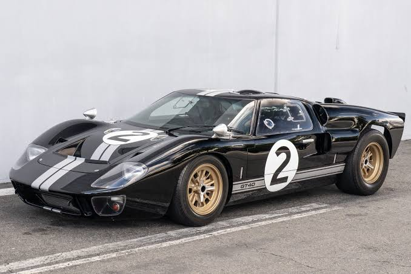

Estado del Proyecto
Este sitio web fue publicado exitosamente utilizando Vercel CLI.
El Ford GT40 es un legendario auto de carreras estadounidense creado por Henry Ford II con el único propósito de vencer a Ferrari en las 24 Horas de Le Mans, una meta que logró de forma espectacular al ganar el campeonato de manera consecutiva entre 1966 y 1969. Desarrollado con el apoyo del diseñador Carroll Shelby y el piloto Ken Miles, el vehículo debe su icónico nombre a su baja estatura, ya que medía exactamente 40 pulgadas de alto desde el suelo hasta el techo para cumplir con las regulaciones de la época. Equipado con brutales motores V8, el GT40 no solo rompió el dominio europeo en el automovilismo mundial, sino que se convirtió en un símbolo de ingeniería y potencia, cuyas unidades originales son consideradas hoy en día tesoros históricos que alcanzan precios multimillonarios en subastas.
